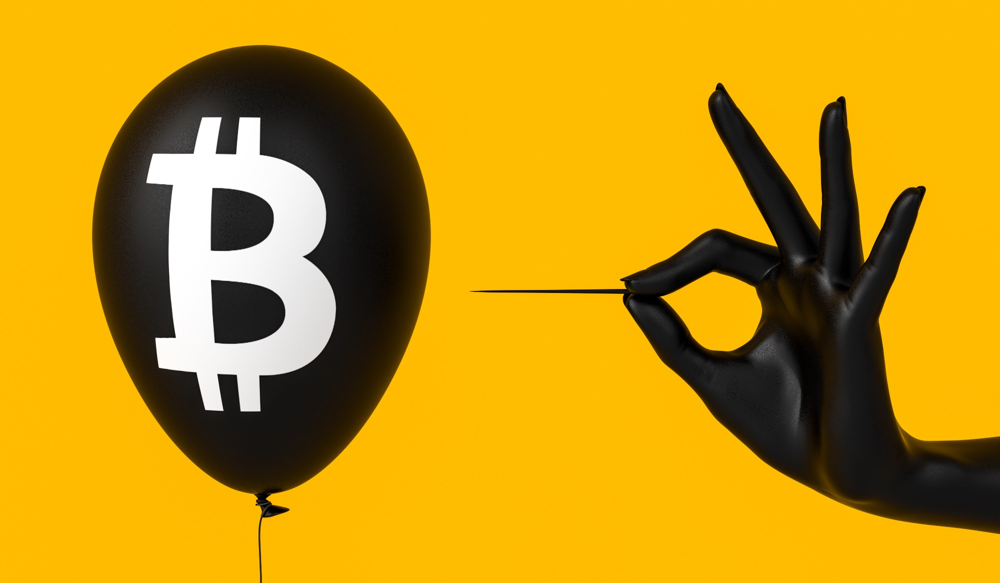

We’re About to Witness the Great Cryptocurrency Reset
The crypto movement is destroying itself
Ellyse Perry | 23 July | 7 min Read

WHEN the elusive Satoshi Nakamoto published his white paper in 2008, it
was
just a mere
document, describing
a new, unique payment system he called Bitcoin. Yet, even though he did not portray any particular
narrative
inside, it prompted an entire generation of financially repressed citizens into believing that digital
currencies might solve their ever-increasing monetary woes.
We began to perceive the Bitcoin network as a revolutionary economic tool, one that used sound money to
create a more equal society through enhanced financial freedom and liberty. It was the new, rebellious
way
to stick it to the man, an escape pod that detached ourselves from the clutches of a financially
repressive
regime, and, best of all, a gigantic “screw you” to those who architected its rise and our descent into
the
monetary chaos.
Since then, the financial media has fed us a constant stream of crypto narratives, most declaring that
the
world is moving closer toward this brighter, more sovereign, more liberating future that Nakamoto
indirectly
sold to us. We’ve seen the rise of crypto
influencers, or “cryptofluencers”, who often cheer things like:
“The fiat system is collapsing!”, “Bitcoin is financial freedom!”, “Central bankers and Wall Street are
literally shaking in their boots!”
Except, there’s one small problem with these narratives. None are coming true or have played out in
reality.
Instead, they have matured into carefully constructed fictions, disguising how Bitcoin has failed at
almost
everything Nakamoto set out to achieve. Since the crypto ecosystem keeps blurting out a non-stop stream
of
“freedom porn”, we’ve failed to notice that the crypto movement, though it started out with good
intentions,
has gradually mutated into the same regressive paradigm the existing elites have promoted for decades.
Nakamoto had designed Bitcoin to eliminate the middleman, mostly Wall Street banks, state financial
institutions, and mega-corporations, which most citizens loathe and despise. Bitcoin has succeeded in
doing
this, but it has failed to create any of the delicious freedom, equality, and liberty it had promised.
Rather, only a few individuals have truly benefited from the crypto boom. In fact, a new power has
risen
alongside the existing financial aristocracy: the crypto elite, who’s secretly formed a monopoly
behind the
scenes.